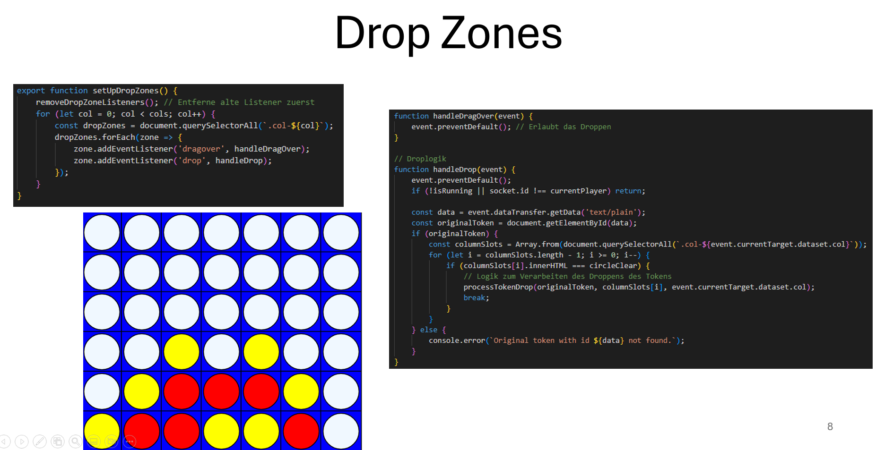

Übersicht
Das Modul "Web-Technologie" bietet eine fundierte Einführung in moderne Webentwicklung, von JavaScript-Grundlagen bis hin zur Nutzung von APIs und Websockets für dynamische und interaktive Anwendungen.
Inhalte
- JavaScript: Variablen, Kontrollstrukturen, Funktionen und Objekte.
- DOM- und Event-Manipulation: Dynamische Updates und Interaktionen auf Webseiten.
- Web APIs: Fetch-API, LocalStorage, IndexedDB und Websockets.
- Grafiken: Canvas, WebGL und SVG.
- Tooling: Einführung in Node.js, npm und moderne Entwicklungswerkzeuge.
Ablauf
- Theorie:
- Einführung in Git, HTTP und JavaScript-Grundlagen.
- Vertiefung in APIs, Websockets und Routing.
- Praktische Übungen:
- Erstellung einer Währungsrechner-App mit Live-Updates.
- Entwicklung eines Tic-Tac-Toe-Spiels mit Speicherfunktion.
- Projekte:
- Vier Gewinnt mit Drag & Drop und Echtzeitkommunikation über Websockets.
Ziele des Moduls
Studierende entwickeln die Fähigkeit, moderne Webanwendungen zu erstellen, die dynamisch und interaktiv sind. Sie lernen, APIs zu nutzen und komplexe Benutzerinteraktionen zu implementieren.
Beispiel
Beispiel aus der Präsentation aus der Hausarbeit.
Gezeigt wird hier der Quellcode, der die Zonen bestimmt in denen die Spielchips losgelassen werden können.
